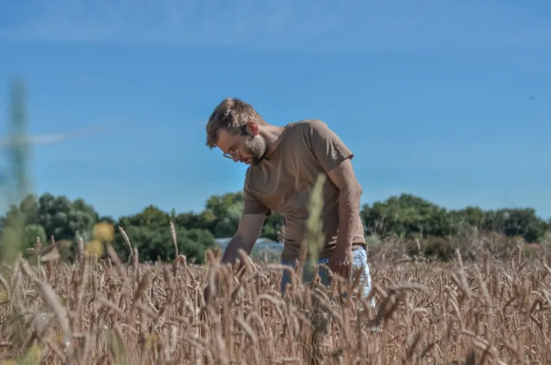
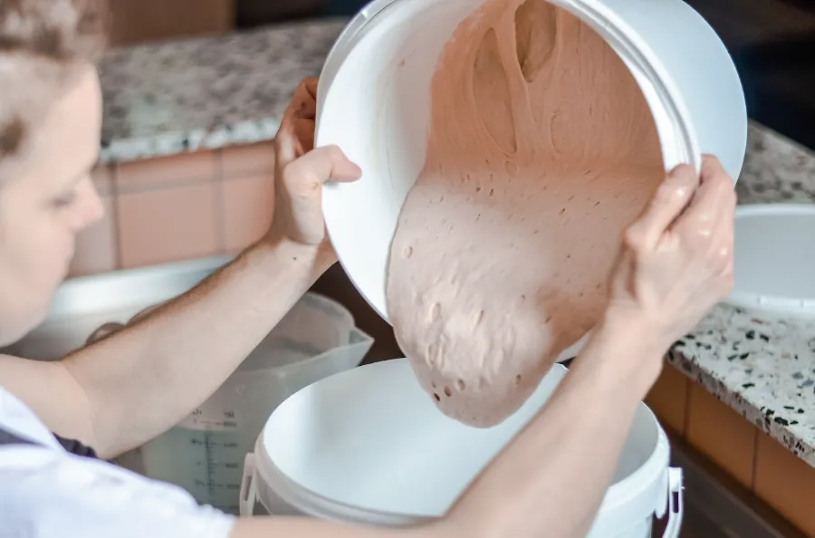
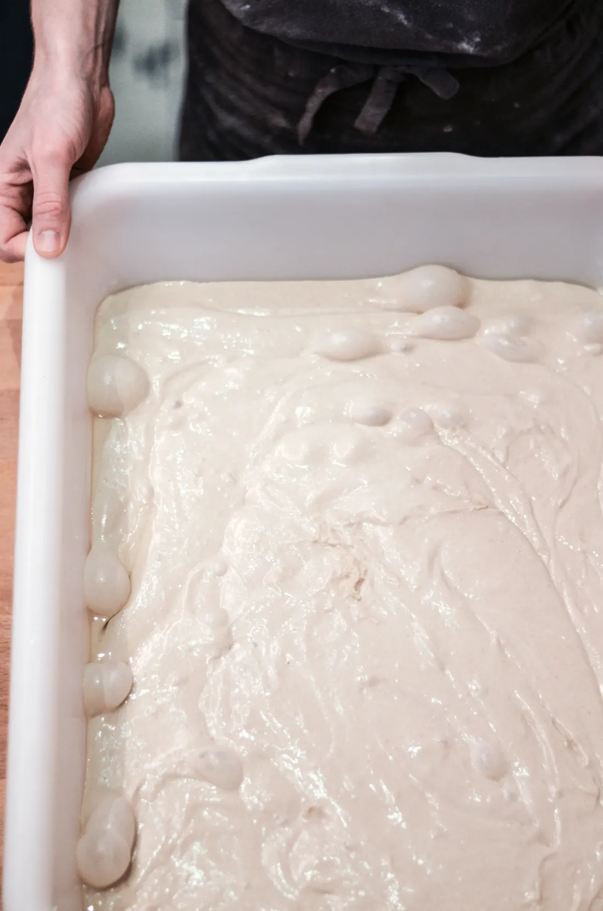
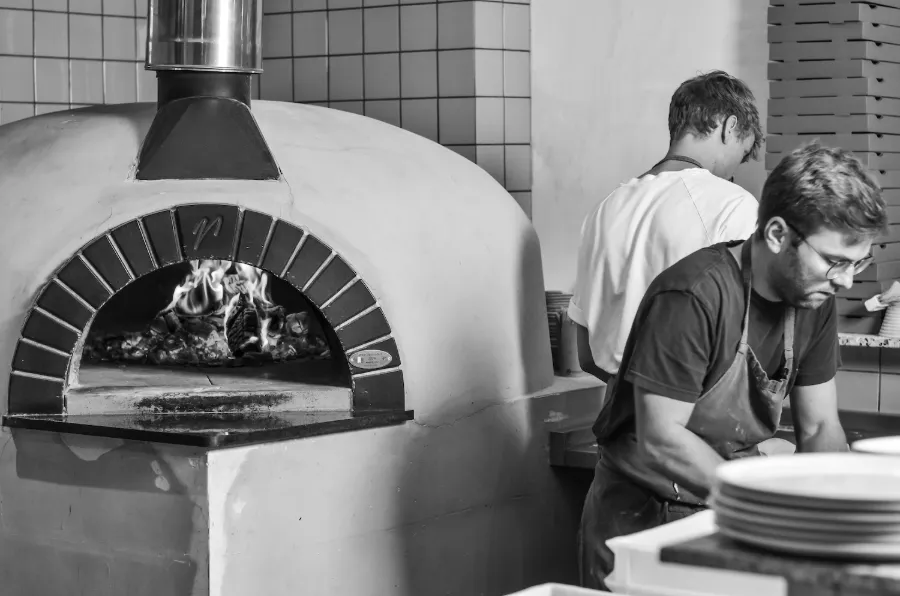

Van akker tot oven
Een goede pizza begint lang voordat hij de oven in gaat. Zo gaat het bij ons, stap voor stap.
-

Het graan
Ons graan komt van Doornik Natuurakkers in Bemmel. Louis Dolmans zaaide er in 2010 de eerste akkers in, vooral voor de akkervogels: het afgelopen jaar zijn er 65 soorten broedvogels gespot. Op 18 hectare groeien emmer, spelt en Sint-jansrogge, maar ook zeldzame rassen als Gelderse risweit, Wilhelminatarwe en Goldblume. In de zomer kun je er mee op graanwandeling.
-

De Witte Molen
De Witte Molen in Nijmegen, de enige volledig werkende molen van de stad, staat er al sinds 1760 en maalt zo'n 160.000 kilo biologisch graan per jaar. Voor ons maken ze een eigen 'pizzacafé DESEM' bloemmix: de granen van Doornik als smaakmakers, aangevuld met biologische Lavett-tarwe voor een luchtig deeg.
-

Zuurdesem en geduld
Zuurdesem is niets meer dan bloem, water en geduld: natuurlijke gisten uit de bloem en de lucht laten het deeg rijzen. Dat geeft veel meer smaak dan gist uit een zakje. We laten ons deeg tot wel 24 uur rijzen en maken alles zelf, van begin tot eind. Alleen het mengen doet de deegkneder.
-

400 graden, 90 seconden
Elke bodem vormen we met de hand, zodat de lucht erin blijft: een dunne bodem en een korst die zacht is van binnen en knapperig van buiten. In 90 seconden op 400 graden is hij gaar. De zwarte blaasjes op de korst, als een luipaardprint, zijn juist een goed teken.
En de toppings?
Daar besteden we net zoveel aandacht aan als aan het deeg. Ons vlees halen we het liefst bij de biologische slager in Nijmegen, De Groene Weg. Een deel komt uit Italië, zoals de kazen en de ingeblikte tomaten voor onze tomatensaus. De kwaliteit is altijd doorslaggevend, niet de herkomst.